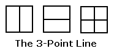
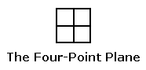
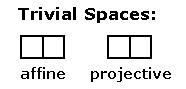

Geometry
Simplified

(a projective space)
The above finite projective
space is the simplest nontrivial example
of a Galois geometry (i.e., a finite geometry
with coordinates in a
finite (that is, Galois) field.)
The vertical (Euclidean)
line represents a (Galois) point, as does the horizontal line
and also the vertical-and-horizontal cross that represents the first
two points'
binary sum (i.e., symmetric difference, if the lines are regarded as
sets).
Homogeneous coordinates for the points of this line —
(1,0), (0,1), (1,1).
Here 0 and 1 stand for the elements of the two-element Galois field GF(2).
The 3-point line is the projective
space corresponding to the affine space
(a plane, not a line) with four points —

(an affine space)
The (Galois) points of this
affine plane are not the single and combined (Euclidean)
line segments that play the role
of points in the 3-point projective line,
but rather the four subsquares that the line
segments separate.
For further details, see Galois Geometry.
There are, of course, also
the trivial two-point affine space
and the corresponding trivial one-point projective
space —

Here again, the points of
the affine space are represented by squares,
and the point of the projective space is represented by a line segment
separating the affine-space squares.